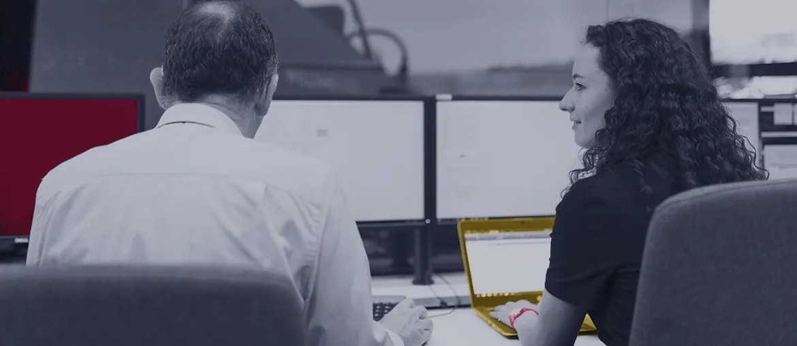

The open role joins core product and mission-unique work. Split platform backlog from mission adapters, then demo each path weekly. Keep one owner list so core C2 decisions stay clear.
Prepared for Matthew Roscoe
Scale Quindar's mission software without slowing secure delivery
Saw Quindar hiring a Full Stack Engineer for Python, AWS, React, and mission-specific government work. That points to more product load, not just one open seat.
Hiring signal sourceOur read
Quindar is scaling core mission software while adding secure customer programs. The Full Stack role spans Python, AWS, React, GraphQL, CI/CD, and government-specific work. That mix can pull staff engineers between product work and mission adapters. If this load stays with the same senior people, demos slow and integration debt grows. Quindar Mission Management already sells one common operating picture, so every new adapter must strengthen that promise.
Where we'd start
The ATLAS flow reacts to missed passes. Add simulator tests for contact scheduling, recovery steps, and audit logs. Run these checks before each new ground-station or partner adapter.
What we'd do
Map mission boundaries
Review C2, planning, and event flows, then mark which code should stay core platform safely.
Build adapter contracts
Create typed API checks for partner systems, simulators, and customer protocols before feature work expands.
Harden the release path
Add regression tests, CI checks, and deploy notes around contact scheduling and recovery flows before release.
Ship one pilot increment
Deliver a tested feature slice that supports one mission workflow without touching unrelated platform code.
Who is Elinext
Proof

AI tool for telecom network monitoring
Elinext helped build real-time infrastructure monitoring for many teams and system types.
Read case study
Python infrastructure self-service portal
A Python and DevOps team improved internal infrastructure control for a U.S. telecom client.
Read case study